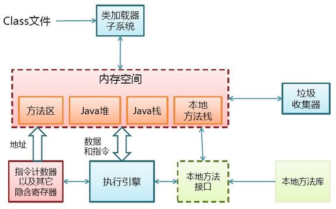
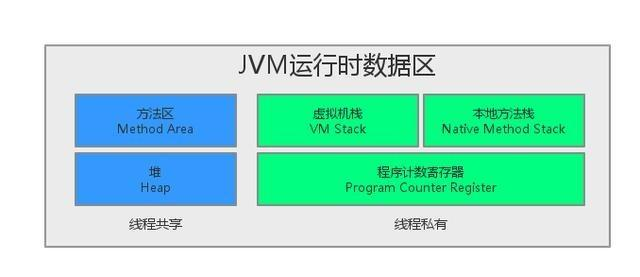
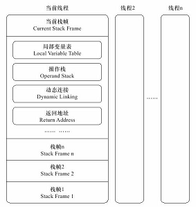
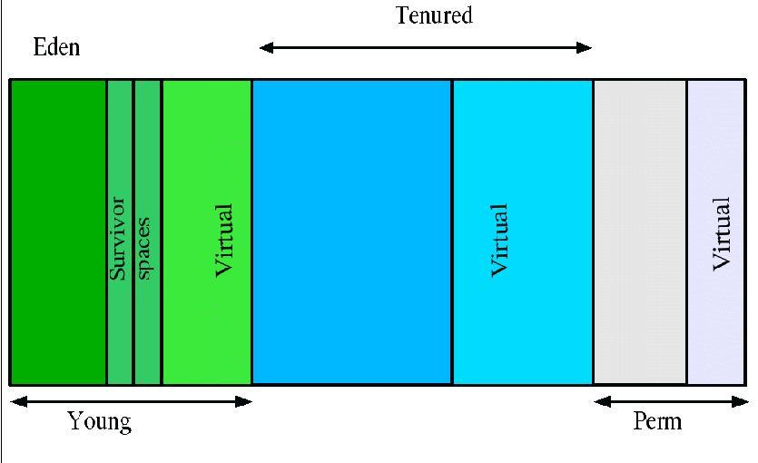

JVM内存区域划分
1. 掌握程序计数器、堆、虚拟机栈、本地方法栈、方法区（JAVA8已移除）、元空间（JAVA8新增）的作用及基本原理.
2. 掌握堆的划分: 新生代（Eden、Survivor1、Survivor2）和老年代的作用及工作原理.
3. 掌握JVM内存参数设置及调优.
类加载
1. 掌握类的加载阶段: 加载、链接（验证、准备、解析）、初始化、使用、卸载.
2. 掌握类加载器分类及其应用: 启动类加载器、扩展类加载器、应用程序类加载器、自定义加载器.
运行时内存结构
Class文件格式
Java字节码和执行引擎
Java内存模型
监控调优
GC算法和垃圾回收
类加载
线程和锁
JVM内存区域划分
 
JVM内存区域可以划分为:
- 程序计数器
- 堆
- 虚拟机栈
- 本地方法栈
- 方法区(Java8已移除)
- 元空间(Java8新增)
程序计数器
程序计数器可以看做是当前线程所执行的字节码的行号指示器. 在JVM的概念模型里, 字节码解释器工作时就是通过改变这个计数器的值来选取下一条需要执行的字节码指令.
由于JVM的多线程是通过线程轮流切换并分配处理器执行时间的方式来实现的, 为了在线程切换后能恢复到正确的执行位置, 每条线程都需要有一个独立的程序计数器, 独立存储, 互不影响. 所以, 程序计数器是线程私有的内存区域.
如果线程执行的是一个Java方法, 计数器记录的是正在执行的虚拟机字节码指令的地址；如果线程执行的是一个Native方法, 计数器的值为空.
- 程序计数器是Java虚拟机规范中唯一一个没有规定任何OutOfMemoryError情况的区域.
虚拟机栈
Java虚拟机栈描述的是Java方法执行的内存模型:
每个方法执行的同时会创建一个栈帧, 栈帧用于存储局部变量表、操作数栈、动态链接、方法出口等信息. 每个方法从调用直至执行完成的过程, 就对应着一个栈帧在虚拟机栈中入栈到出栈的过程.

Java虚拟机栈是线程私有的, 它的生命周期与线程相同.
程序员主要关注的stack栈内存, 就是虚拟机栈中局部变量表部分. 局部变量表存放了编译时期可知的各种基本数据类型和对象引用. 局部变量表所需的内存空间在编译时期完成分配, 当进入一个方法时, 这个方法需要在栈帧中分配多大的局部变量空间是完全确定的, 在方法运行期间不会改变局部变量表的大小.
Java虚拟机规范对这个区域规定了两种异常情况:
如果线程请求的栈深度大于虚拟机所允许的深度, 将抛出
StackOverflowError异常；- 如果虚拟机栈可以动态扩展, 如果扩展时无法申请到足够的内存, 就会抛出
OutOfMemoryError异常； （当前大部分JVM都可以动态扩展, 只不过JVM规范也允许固定长度的虚拟机栈）
栈深度: 每次方法调用, 都会创建一个栈帧, 一个方法调用另一个方法, 栈帧就会深度增加一层
本地方法栈
本地方法栈与虚拟机栈所发挥的作用是非常相似的, 它们之间的区别不过是虚拟机栈为虚拟机执行Java方法服务（也就是字节码）, 而本地方法栈为虚拟机使用到的Native方法服务.
Java虚拟机规范对本地方法栈使用的语言、使用方法与数据结构并没有强制规定, 因此可以由虚拟机自由实现. 例如: HotSpot虚拟机直接将本地方法栈和虚拟机栈合二为一.
同虚拟机栈相同, Java虚拟机规范对这个区域也规定了两种异常情况
StackOverflowError和OutOfMemoryError异常.
堆
- Java堆是被所有的线程共享的一块内存区域, 在虚拟机启动时创建. Java堆的唯一目的就是存放对象实例, 几乎所有的对象实例都在这里分配内存.
- Java堆是垃圾回收器管理的主要区域, 因此也被称为"GC堆".
从内存回收的角度看, 由于现在收集器基本都采用分代收集算法, 所以Java堆可以细分为: 新生代、老生代；
从内存分配的角度看, 线程共享的Java堆可能划分出多个线程私有的分配缓冲区（TLAB）；
不论如何划分, 都与存放的内容无关, 无论哪个区域, 存储的仍然是对象实例.
Java虚拟机规范规定, Java堆可以处于物理上不连续的内存空间中, 只要逻辑上是连续的即可, 就像我们的磁盘空间一样. 在实现上, 既可以是固定大小的, 也可以是可扩展的, 不过当前主流JVM都是按照可扩展来实现的.
Java虚拟机规范规定, 如果在堆上没有内存完成实例分配, 并且堆上也无法再扩展时, 将会抛出
OutOfMemoryError异常.内存泄露和内存溢出 Java堆内存的
OOM异常是非常常见的异常情况, 重点是根据内存中的对象是否是必要的, 来弄清楚到底是出现了内存泄露(Memory Leak)还是内存溢出(Memory Overflow).内存泄露: 指程序中一些对象不会被GC所回收, 它始终占用内存, 即被分配的对象引用链可达但已无用. （可用内存减少）
- 内存溢出: 程序运行过程中无法申请到足够的内存而导致的一种错误. 内存溢出通常发生于OLD段或Perm段垃圾回收后, 仍然无内存空间容纳新的Java对象的情况.
- 内存泄露是内存溢出的一种诱因, 不是唯一因素.
方法区
方法区也是被
所有的线程共享的一块内存区域. 它用于存储已被虚拟机加载的类信息、常量、静态变量、即时编译器编译后的代码等数据.Java虚拟机规范对方法区的限制非常宽松, 除了和Java堆一样 不需要连续的内存和可以选择固定大小或者可扩展之外, 还可以选择不实现垃圾回收. 这区域的内存回收目标主要是针对常量池的回收和类型的卸载, 一般而言, 这个区域的内存回收比较难以令人满意, 尤其是类型的回收, 条件相当苛刻, 但是这部分区域的内存回收确实是必要的.
Java虚拟机规范规定, 当方法区无法满足内存分配的需求时, 将抛出
OutOfMemoryError异常.运行时常量池
运行时常量池是方法区的一部分. Class文件中除了有类的版本、字段、方法、接口等描述信息外, 还有一项信息是常量池, 用于存放编译期生成的各种字面量和符号引用, 这部分内容将在类加载后进入方法区的运行时常量池中存放.运行时常量池相对于Class文件常量池的另外一个重要特征是具备动态性, Java语言并不要求常量一定只有编译期才能产生, 也就是并非预置入Class文件中常量池的内容才能进入方法区运行时常量池, 运行期间也可能将新的常量放入池中, 这种特性被开发人员利用比较多的就是String类的intern()方法.String.intern()
String.intern()是一个Native方法, 它的作用是: 如果字符串常量池中已经包含了一个等于此String对象的字符串, 则返回代表池中这个字符串的String对象；否则, 将此String对象包含的字符串添加到常量池中, 并且返回此字符串的引用.
public static void main(String[] args) {
String str1 = new StringBuilder("计算机").append("软件").toString();
System.out.println(str1.intern() == str1);
String str2 = new StringBuilder("ja").append("va").toString();
System.out.println(str2.intern() == str2);
}
这段代码在JDK1.6中运行, 会得到两个false, 而在JDK1.7中运行, 会得到一个true和一个false. 原因是:
- 在JDK1.6中
intern()方法会把首次遇到的字符串实例复制到永久代中, 返回的也是永久代中这个字符串实例的引用, 而由StringBuilder创建的字符串实例在Java堆上, 所以必然不是一个引用. - 在JDK1.7中
intern()方法不会复制实例, 只是在常量池中记录首次出现的实例引用, 因此intern()返回的引用和由StringBuilder创建的字符串实例是同一个. - str2返回false是因为Java这个字符串在执行
StringBuilder("ja").append("va").toString()之前已经出现过, 字符串常量池中已经有它的引用了, 不符合首次出现的原则, 而"计算机软件"这个字符串是首次出现的.
堆的划分
 堆的分代划分
Young（年轻代）
年轻代分三个区. 一个
Eden区, 两个Survivor区. 大部分对象在Eden区中生成. 当Eden区满时, 还存活的对象将被复制到Survivor区（两个中的一个）, 当这个 Survivor区满时, 此区的存活对象将被复制到另外一个Survivor区, 当这个Survivor区也满了的时候, 从第一个Survivor区复制过来的并且此时还存活的对象, 将被复制“年老区(Tenured)”. 需要注意, Survivor的两个区是对称的, 没先后关系, 所以同一个区中可能同时存在从Eden复制过来的对象和从前一个Survivor复制过来的对象, 而复制到年老区的只有从第一个Survivor区过来的对象. 而且, Survivor区总有一个是空的.Tenured（年老代）
年老代存放从年轻代存活的对象. 一般来说年老代存放的都是生命期较长的对象.
Perm（持久代）
用于存放静态文件, 如Java类、方法等. 持久代对垃圾回收没有显著影响, 但是有些应用可能动态生成或者调用一些Class, 例如Hibernate等, 在这种时候需要设置一个比较大的持久代空间来存放这些运行过程中新增的类. 持久代大小通过-XX:MaxPermSize=进行设置.
GC
GC有两种类型: Scavenge GC和Full GC.
Scavenge GC一般情况下, 当新对象生成, 并且在Eden申请空间失败时, 就好触发Scavenge GC, 堆Eden区域进行GC, 清除非存活对象, 并且把尚且存活的对象移动到Survivor区. 然后整理Survivor的两个区.
Full GC对整个堆进行整理, 包括Young、Tenured和Perm. Full GC比Scavenge GC要慢, 因此应该尽可能减少Full GC. 有如下原因可能导致Full GC:
- Tenured被写满
- Perm域被写满
- System.gc()被显示调用
- 上一次GC之后Heap的各域分配策略动态变化
基本回收算法
- 引用计数（Reference Counting） 比较古老的回收算法。原理是此对象有一个引用，即增加一个计数，删除一个引用则减少一个计数。垃圾回收时，只用收集计数为0的对象。此算法最致命的是无法处理循环引用的问题。
- 标记-清除（Mark-Sweep） 此算法执行分两阶段。第一阶段从引用根节点开始标记所有被引用的对象，第二阶段遍历整个堆，把未标记的对象清除。此算法需要暂停整个应用，同时，会产生内存碎片。
- 复制（Copying） 此 算法把内存空间划为两个相等的区域，每次只使用其中一个区域。垃圾回收时，遍历当前使用区域，把正在使用中的对象复制到另外一个区域中。次算法每次只处理 正在使用中的对象，因此复制成本比较小，同时复制过去以后还能进行相应的内存整理，不过出现“碎片”问题。当然，此算法的缺点也是很明显的，就是需要两倍 内存空间。
- 标记-整理（Mark-Compact） 此算法结 合了“标记-清除”和“复制”两个算法的优点。也是分两阶段，第一阶段从根节点开始标记所有被引用对象，第二阶段遍历整个堆，把清除未标记对象并且把存活 对象“压缩”到堆的其中一块，按顺序排放。此算法避免了“标记-清除”的碎片问题，同时也避免了“复制”算法的空间问题。
- 增量收集（Incremental Collecting） 实施垃圾回收算法，即：在应用进行的同时进行垃圾回收。不知道什么原因JDK5.0中的收集器没有使用这种算法的。
- 分代（Generational Collecting） 基于对对象生命周期分析后得出的垃圾回收算法。把对象分为年青代、年老代、持久代，对不同生命周期的对象使用不同的算法（上述方式中的一个）进行回收。现在的垃圾回收器（从J2SE1.2开始）都是使用此算法的。
JVM内存参数设置与调优
常见配置举例
堆大小设置
JVM 中最大堆大小有三方面限制: 相关操作系统的数据模型（32-bt还是64-bit）限制；系统的可用虚拟内存限制；系统的可用物理内存限制. 32位系统 下, 一般限制在1.5G~2G；64为操作系统对内存无限制. 我在Windows Server 2003 系统, 3.5G物理内存, JDK5.0下测试, 最大可设置为1478m.
典型设置:
java -Xmx3550m -Xms3550m -Xmn2g -Xss128k- -Xmx3550m: 设置JVM最大可用内存为3550M.
- -Xms3550m: 设置JVM初始内存为3550m. 此值可以设置与-Xmx相同, 以避免每次垃圾回收完成后JVM重新分配内存.
- -Xmn2g: 设置年轻代大小为2G. 整个堆大小=年轻代大小 + 年老代大小 + 持久代大小. 持久代一般固定大小为64m, 所以增大年轻代后, 将会减小年老代大小. 此值对系统性能影响较大, Sun官方推荐配置为整个堆的3/8.
- -Xss128k: 设置每个线程的堆栈大小. JDK5.0以后每个线程堆栈大小为1M, 以前每个线程堆栈大小为256K. 更具应用的线程所需内存大小进行调整. 在相同物理内 存下, 减小这个值能生成更多的线程. 但是操作系统对一个进程内的线程数还是有限制的, 不能无限生成, 经验值在3000~5000左右.
java -Xmx3550m -Xms3550m -Xss128k -XX:NewRatio=4 -XX:SurvivorRatio=4 -XX:MaxPermSize=16m -XX:MaxTenuringThreshold=0- -XX:NewRatio=4:设置年轻代（包括Eden和两个Survivor区）与年老代的比值（除去持久代）. 设置为4, 则年轻代与年老代所占比值为1: 4, 年轻代占整个堆栈的1/5
- -XX:SurvivorRatio=4: 设置年轻代中Eden区与Survivor区的大小比值. 设置为4, 则两个Survivor区与一个Eden区的比值为2:4, 一个Survivor区占整个年轻代的1/6
- -XX:MaxPermSize=16m:设置持久代大小为16m.
- -XX:MaxTenuringThreshold=0: 设置垃圾最大年龄. 如果设置为0的话, 则年轻代对象不经过Survivor区, 直接进入年老代. 对于年老代比较多的应用, 可以提高效率. 如果将此值设置为一个较大值, 则年轻代对象会在Survivor区进行多次复制, 这样可以增加对象再年轻代的存活时间, 增加在年轻代即被回收的概论.
调优总结
年轻代大小选择
响应时间优先的应用: 尽可能设大, 直到接近系统的最低响应时间限制（根据实际情况选择）. 在此种情况下, 年轻代收集发生的频率也是最小的. 同时, 减少到达年老代的对象.
吞吐量优先的应用: 尽可能设大, 可能到达Gbit的程度. 因为对响应时间没有要求, 垃圾收集可以并行进行, 一般适合8CPU以上的应用.
年老代大小选择 响应时间优先的应用:
年老代使用并发收集器, 所以其大小需要小心设置, 一般要考虑并发会话率和会话持续时间等一些参数. 如果堆设置小了, 可以会造成内存碎片、高回收频率以及应用暂停而使用传统的标记清除方式；如果堆大了, 则需要较长的收集时间. 最优化的方案, 一般需要参考以下数据获得:
- 并发垃圾收集信息
- 持久代并发收集次数
- 传统GC信息
- 花在年轻代和年老代回收上的时间比例 减少年轻代和年老代花费的时间, 一般会提高应用的效率
吞吐量优先的应用: 一般吞吐量优先的应用都有一个很大的年轻代和一个较小的年老代. 原因是, 这样可以尽可能回收掉大部分短期对象, 减少中期的对象, 而年老代尽存放长期存活对象.
较小堆引起的碎片问题
因为年老代的并发收集器使用标记、清除算法, 所以不会对堆进行压缩. 当收集器回收时, 他会把相邻的空间进行合并, 这样可以分配给较大的对象. 但是, 当堆空间 较小时, 运行一段时间以后, 就会出现“碎片”, 如果并发收集器找不到足够的空间, 那么并发收集器将会停止, 然后使用传统的标记、清除方式进行回收. 如果出 现“碎片”, 可能需要进行如下配置:
- -XX:+UseCMSCompactAtFullCollection: 使用并发收集器时, 开启对年老代的压缩.
- -XX:CMSFullGCsBeforeCompaction=0: 上面配置开启的情况下, 这里设置多少次Full GC后, 对年老代进行压缩
常见配置参数汇总
- 堆设置
- -Xms:初始堆大小
- -Xmx:最大堆大小
- -XX:NewSize=n:设置年轻代大小
- -XX:NewRatio=n:设置年轻代和年老代的比值. 如:为3, 表示年轻代与年老代比值为1: 3, 年轻代占整个年轻代年老代和的1/4
- -XX:SurvivorRatio=n:年轻代中Eden区与两个Survivor区的比值. 注意Survivor区有两个. 如: 3, 表示Eden: Survivor=3: 2, 一个Survivor区占整个年轻代的1/5
- -XX:MaxPermSize=n:设置持久代大小
- 收集器设置
- -XX:+UseSerialGC:设置串行收集器
- -XX:+UseParallelGC:设置并行收集器
- -XX:+UseParalledlOldGC:设置并行年老代收集器
- -XX:+UseConcMarkSweepGC:设置并发收集器
- 垃圾回收统计信息
- -XX:+PrintGC
- -XX:+Printetails
- -XX:+PrintGCTimeStamps
- -Xloggc:filename
- 并行收集器设置
- -XX:ParallelGCThreads=n:设置并行收集器收集时使用的CPU数. 并行收集线程数.
- -XX:MaxGCPauseMillis=n:设置并行收集最大暂停时间
- -XX:GCTimeRatio=n:设置垃圾回收时间占程序运行时间的百分比. 公式为1/(1+n)
- 并发收集器设置
- -XX:+CMSIncrementalMode:设置为增量模式. 适用于单CPU情况.
- -XX:ParallelGCThreads=n:设置并发收集器年轻代收集方式为并行收集时, 使用的CPU数. 并行收集线程数.
类加载
类的加载阶段
类加载分为装载、链接、初始化三步.
装载
通过类的全限定名和ClassLoader加载类, 主要是将指定的.Class文件加载至JVM. 当类被加载以后, 在JVM内部就以“类的全限定名+ClassLoader实例ID”来标明类.
在内存中, ClassLoader实例和类的实例都位于堆中, 它们的类信息都位于方法区.
装载过程采用了一种被称为“双亲委派模型（Parent Delegation Model）”的方式, 当一个ClassLoader要加载类时, 它会先请求它的双亲ClassLoader（其实这里只有两个ClassLoader, 所以称为父ClassLoader可能更容易理解）加载类, 而它的双亲ClassLoader会继续把加载请求提交再上一级的ClassLoader, 直到启动类加载器. 只有其双亲ClassLoader无法加载指定的类时, 它才会自己加载类.
双亲委派模型是JVM的第一道安全防线, 它保证了类的安全加载, 这里同时依赖了类加载器隔离的原理: 不同类加载器加载的类之间是无法直接交互的, 即使是同一个类, 被不同的ClassLoader加载, 它们也无法感知到彼此的存在. 这样即使有恶意的类冒充自己在核心包（例如java.lang）下, 由于它无法被启动类加载器加载, 也造成不了危害.
由此也可见, 如果用户自定义了类加载器, 那就必须自己保障类加载过程中的安全.
链接
链接的任务是把二进制的类型信息合并到JVM运行时状态中去. 链接分为以下三步:
- 验证: 校验.Class文件的正确性, 确保该文件是符合规范定义的, 并且适合当前JVM使用.
- 准备: 为类分配内存, 同时初始化类中的静态变量赋值为默认值.
解析（可选）: 主要是把类的常量池中的符号引用解析为直接引用, 这一步可以在用到相应的引用时再解析.
初始化
初始化类中的静态变量, 并执行类中的static代码、构造函数.
JVM规范严格定义了何时需要对类进行初始化:
- 通过new关键字、反射、clone、反序列化机制实例化对象时.
- 调用类的静态方法时.
- 使用类的静态字段或对其赋值时.
- 通过反射调用类的方法时.
- 初始化该类的子类时（初始化子类前其父类必须已经被初始化）.
- JVM启动时被标记为启动类的类（简单理解为具有main方法的类）.
类加载器

ClassLoader的分类:
1）BootstrapClassLoader（启动类加载器）
负责加载$JAVA_HOME中jre/lib/rt.jar里所有的Class，加载System.getProperty(“sun.boot.Class.path”)所指定的路径或jar。
2）ExtensionClassLoader（标准扩展类加载器）
负责加载java平台中扩展功能的一些jar包，包括$JAVA_HOME中jre/lib/*.jar或-Djava.ext.dirs指定目录下的jar包。
在System.getProperty(“java.ext.dirs”)所指定的路径或jar。
3）AppClassLoader（系统类加载器）
负责记载Classpath中指定的jar包及目录中Class
4）CustomClassLoader（自定义加载器）
属于应用程序根据自身需要自定义的ClassLoader，如tomcat、jboss都会根据j2ee规范自行实现。
类加载器的顺序: 双亲委派
当一个ClassLoader要加载类时，它会先请求它的双亲ClassLoader（其实这里只有两个ClassLoader，所以称为父ClassLoader可能更容易理解）加载类，而它的双亲ClassLoader会继续把加载请求提交再上一级的ClassLoader，直到启动类加载器。只有其双亲ClassLoader无法加载指定的类时，它才会自己加载类。
双亲委派模型是JVM的第一道安全防线，它保证了类的安全加载，这里同时依赖了类加载器隔离的原理：不同类加载器加载的类之间是无法直接交互的，即使是同一个类，被不同的ClassLoader加载，它们也无法感知到彼此的存在。这样即使有恶意的类冒充自己在核心包（例如java.lang）下，由于它无法被启动类加载器加载，也造成不了危害。
由此也可见，如果用户自定义了类加载器，那就必须自己保障类加载过程中的安全。